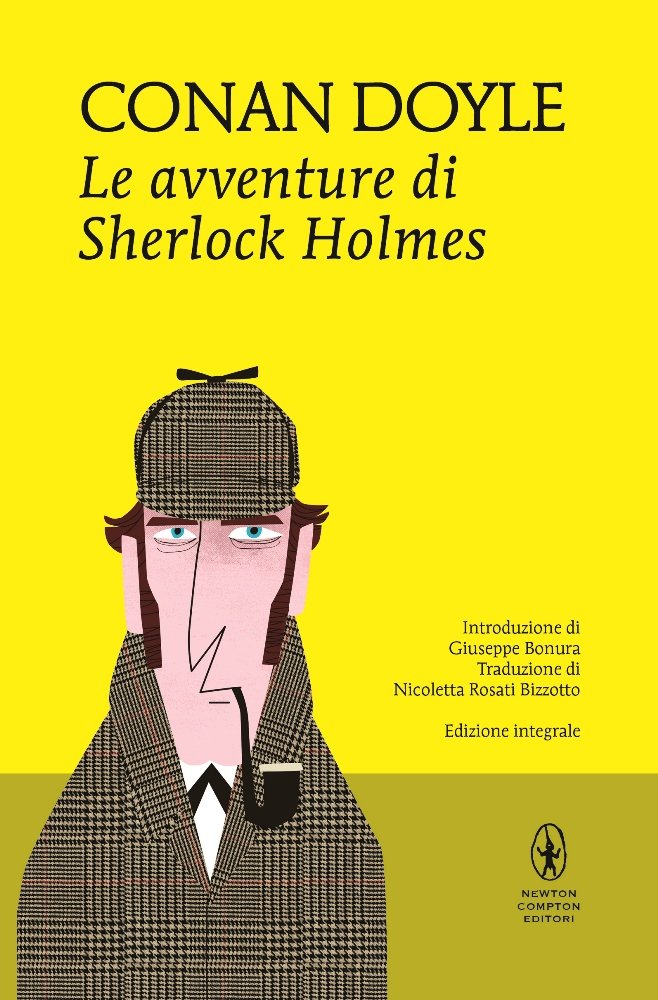

Racconti

Film

Serie Tv
Benedict Cumberbatch nei panni di Sherlock, nell'omonima serie TV di BBC One (2010-2017)
Fuma la pipa e suona il violino. Bastano pochissimi dettagli per riconoscere, con un briciolo della capacità deduttiva che lo ha reso celebre, uno dei personaggi più iconici e riusciti della letteratura di tutti i tempi: Sherlock Holmes. Simbolo del giallo e del mistero, il detective di Baker Street è un vero e proprio colosso, che ha dato i contorni ad un intero genere letterario ed ha ispirato scrittori, personaggi, registi, generi letterari, film, fumetti e chi più ne ha più ne metta, per oltre un secolo, da quando ha fatto la sua prima comparsa nel celebre “Uno studio in Rosso”, pubblicato nel lontano 1887 a firma Sir Arthur Conan Doyle.